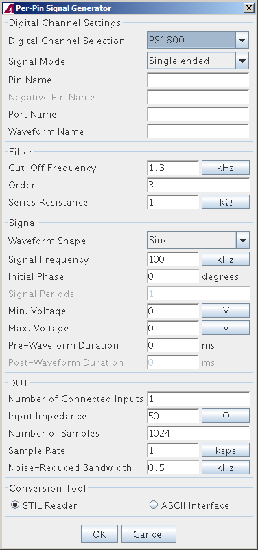

Per-Pin Signal Generator
The Per-Pin Signal Generator (PPSG) is a tool that generates test patterns for digital channels that source analog signals. It can generate patterns for sine, ramp, and triangle waveforms with user-definable characteristics.
The tool generates the patterns as STIL files that can be translated with STIL Reader into single-test-suite test programs for manual integration into test flows or that can be automatically integrated using SmarTest Program Manager (STPM).
PPSG is integrated into the Signal Analyzer.

Functional changes
- Introduced in SmarTest 7.2.0